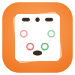

Exposição
 x
x
 padrão x
padrão x

Etiqueta
antes
depois
opacidade
Pivô e espelhar
Chaves e ciclos
Grupos
Guias
Exportar
Pivô

 x
y
x
y
Objeto

 Tela
Tela


Marcar

K
B
I
Shift & Trace


 px
px

Ciclo
x


Arraste desenhos de uma linha para outra na timeline. Alt + arrastar copia.
Desenhar
Testar miniaturas
Imagem inteira (com fundo), sem cebola, respeitando exposição e grupos sincronizados.
Flip



Pegbar
Criado por Coffee Cat Studio
Danila Ribeiro · São Bernardo do Campo, Brasil
coffeecat.com.br/pegbar
☕ Me pague um café
Gratuito · Licença MIT · Photoshop é marca da Adobe.